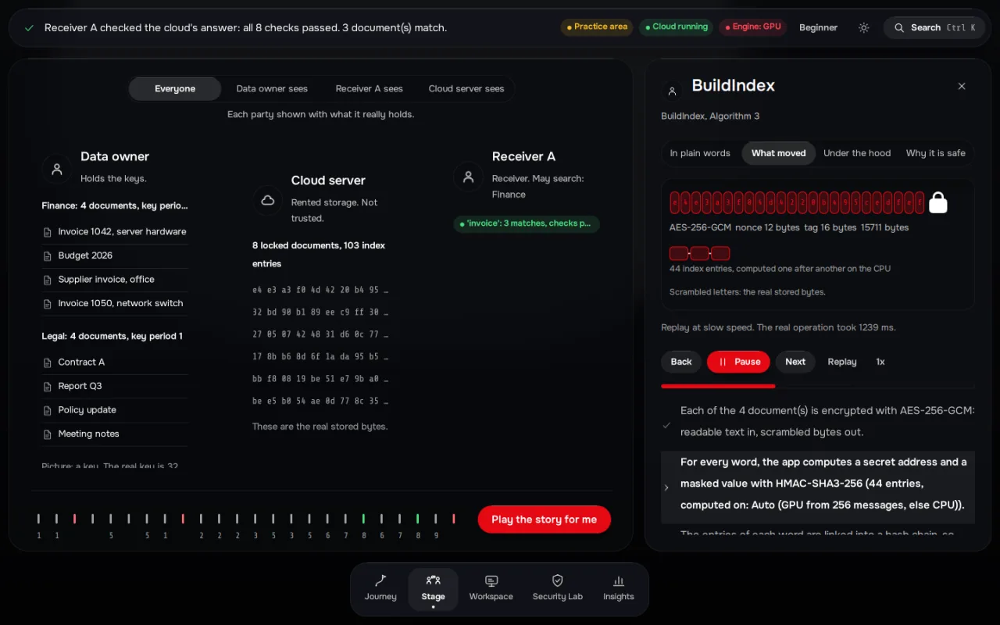
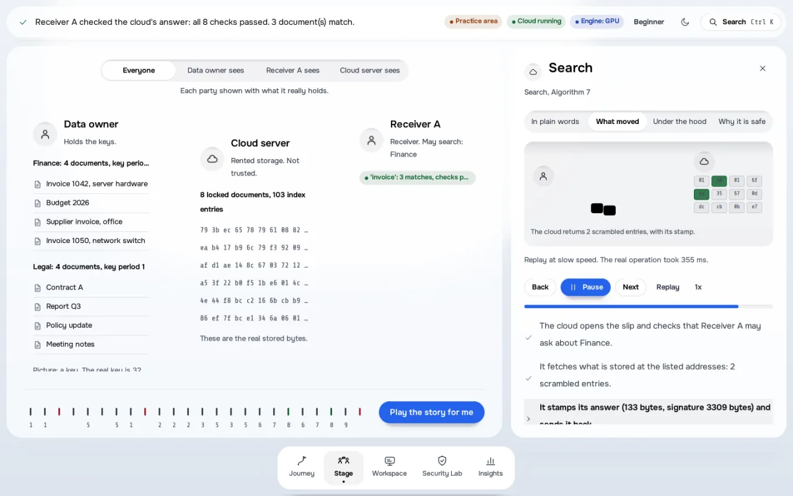

How it works
Ten algorithms, each one a real step you can run and replay in the app. The words below are the app's own plain-language layer; the step inspector shows the bytes.
- SetupAlgorithm 1Alice, the Cloud and each doctor make their own key pairs: ML-KEM for sealed envelopes, ML-DSA for stamps. Private keys never leave the PC that made them.
- JoinAlgorithm 2Bob asks to join with his public keys and a stamped request. Alice approves him for some groups, and sends him those groups' keys in a sealed envelope only he can open.
- BuildIndexAlgorithm 3Alice locks each document with AES-256-GCM and builds a search index: for every word, a list of addresses that look random and point at locked entries.
- UpdateAlgorithm 4Adding or deleting documents appends new, stamped batches. Old searches cannot find new documents (forward privacy), and deleted ones stay hidden (backward privacy).
- PublishAlgorithm 5Alice stamps a short summary of each group: its version, how many entries, and a running fingerprint of everything in it. The Cloud keeps the newest one.
- TokenGenAlgorithm 6Bob turns a word into a sealed search slip: the addresses to look up, locked so that only the Cloud can read the slip and still not learn the word.
- SearchAlgorithm 7The Cloud checks that Bob may search that group, looks up the addresses, and returns the locked entries with its own stamp. It never sees the word or the documents.
- VerifyAlgorithm 8Bob checks the Cloud's answer against Alice's stamped summary: nothing dropped, nothing changed, nothing replayed, and the summary is fresh.
- DecryptAlgorithm 9Bob fetches a locked document and opens it with his group key, after checking Alice's stamp on it.
- RevokeAlgorithm 10Alice takes a doctor's access away by changing the locks of his groups and giving the new keys only to those who stay.


Honest limits
Policy R or policy RE
Revoking with policy R is quick: everything written after the change uses the new key. Documents from before it stay locked with the old key, which the revoked doctor still has; if he teams up with the Cloud, he can read those. Policy RE also locks every old document again with the new key and makes the Cloud delete the old copies. It closes that gap and takes longer. The Security Lab runs both and shows the difference.
What the GPU does
The graphics chip only speeds up the symmetric batch work (computing many addresses and masks with SHA3) when a large index is built. ML-KEM and ML-DSA always run on the normal processor. At small sizes the GPU is not faster, and the app says so with measured numbers.
What the Cloud still learns
Like every practical searchable encryption scheme, the Cloud sees which stored entries a search touches and when, and how many there are. It does not learn the word, the documents or the keys. The app shows exactly what the Cloud holds in its Cloud sees lens.
Not audited
The post-quantum code is a pure Python implementation of the NIST standards: slow and not constant time. This is teaching and research software.
The protocol and its terms are summarised in the project's concepts document. Read the concepts document.